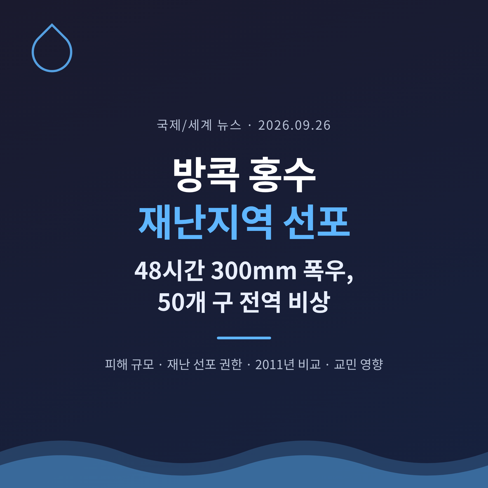
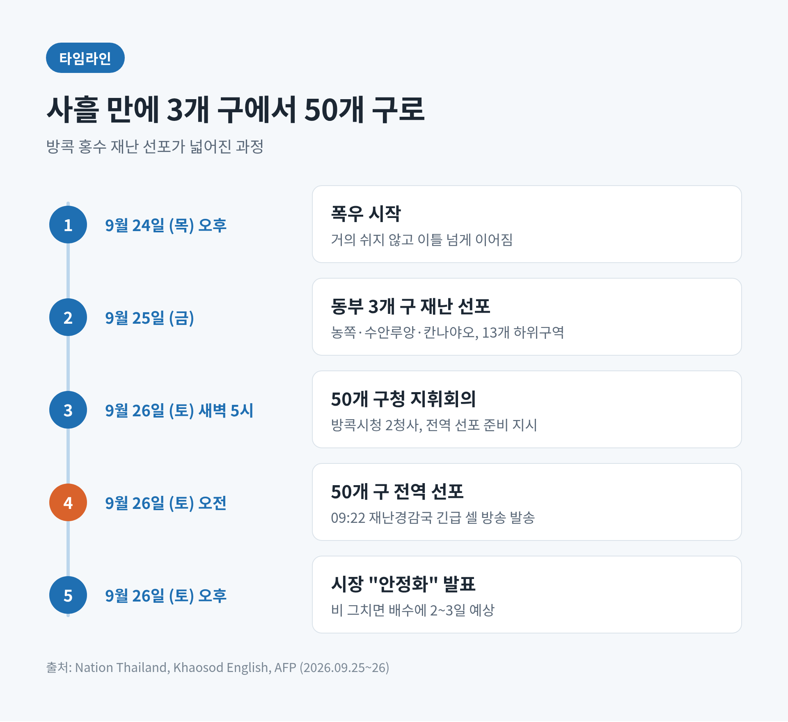
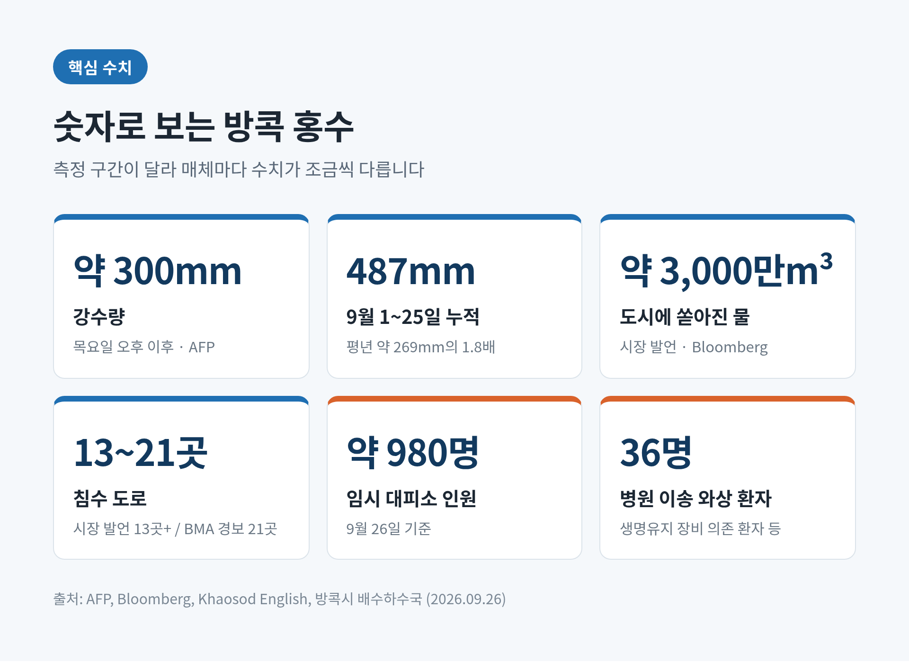
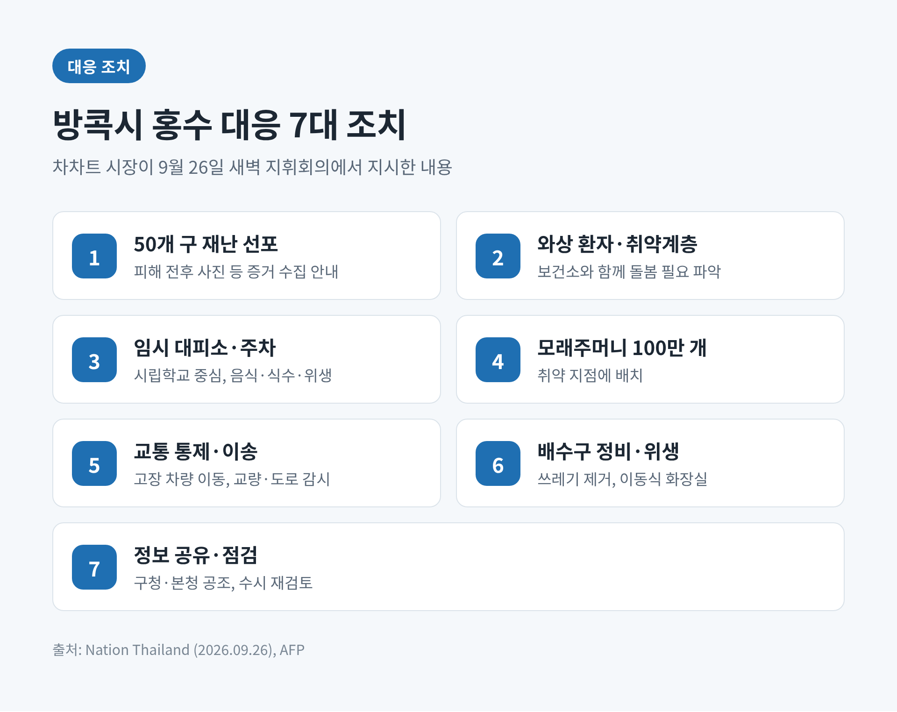
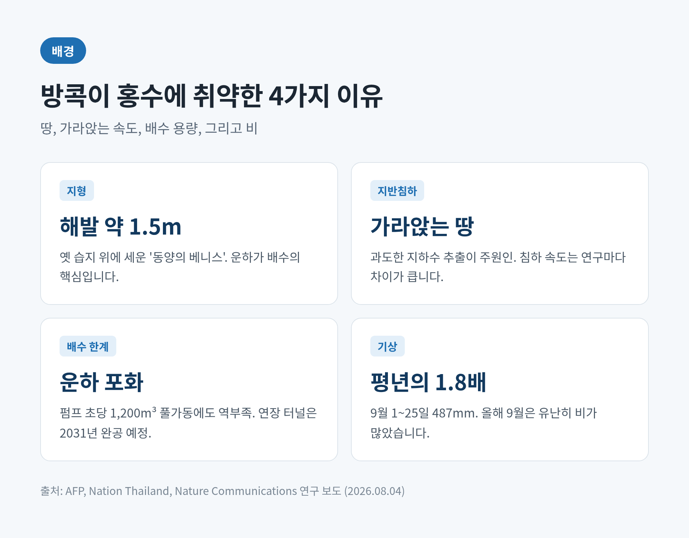
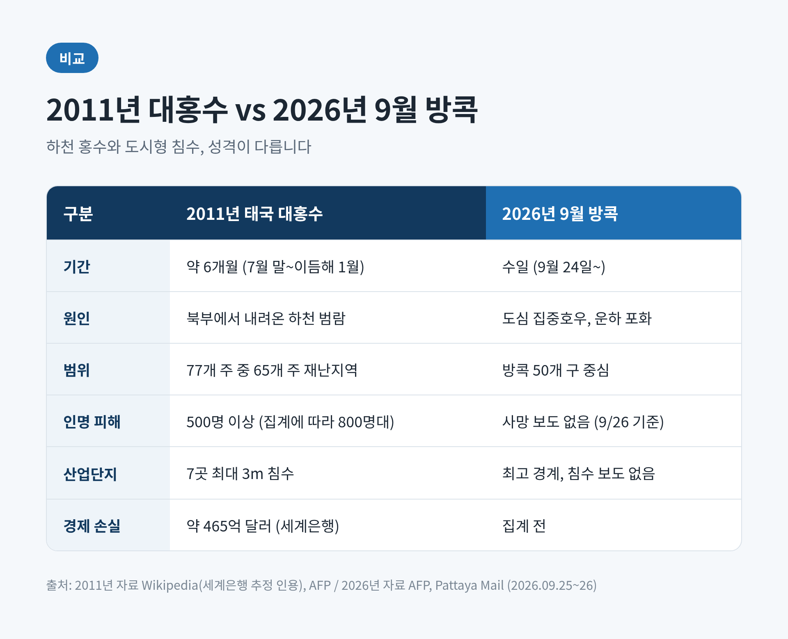
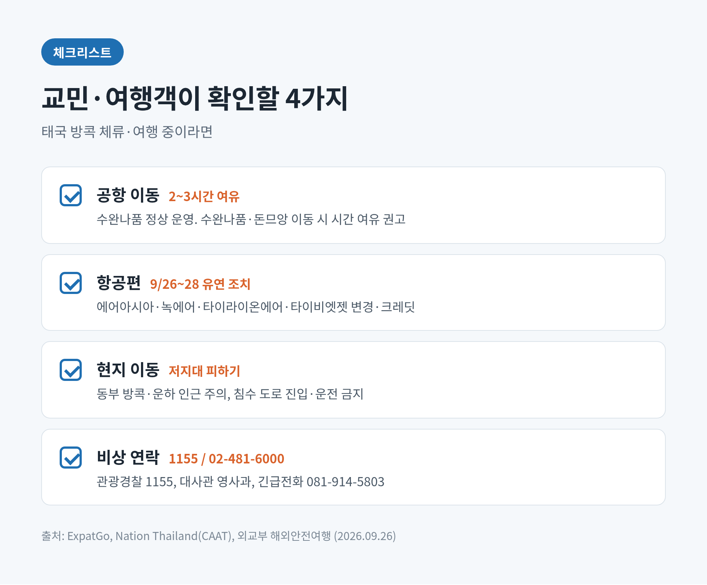

방콕 홍수 재난지역 선포, 48시간 300mm 폭우에 50개 구 전역 비상

오늘은 태국 방콕이 도시 전체를 홍수 재난지역으로 선포한 소식을 정리해 보려 합니다.
무엇이 얼마나 잠겼는지, 재난 선포가 무엇을 바꾸는지, 방콕이 왜 유독 물에 약한지, 그리고 교민·여행객과 한국 경제에는 어떤 의미인지 차례로 살펴봅니다.
3줄 요약
- 9월 26일, 차차트 싯티판 방콕 시장이 50개 구 전역을 홍수 재난지역으로 선포했습니다. 전날 동부 3개 구에서 시작된 선포가 하루 만에 도시 전체로 넓어졌습니다.
- 목요일 오후부터 약 300mm의 비가 쏟아졌고, 대피소에 약 980명이 머물고 있습니다. 가장 큰 피해는 운하가 많은 동부 방콕입니다.
- 시는 "비가 그치면 2~3일이면 물이 빠진다"고 밝혔지만, 기상 당국은 27일까지 강한 비를 예보했습니다.
■ 무슨 일이 있었나 — 사흘 만에 3개 구에서 50개 구로
비는 9월 24일(목) 오후부터 거의 쉬지 않고 내렸습니다.
AFP가 전한 차차트 시장의 설명으로는 토요일까지 약 300mm가 쏟아졌습니다.
첫 선포는 25일(금)이었습니다.
동부의 농쪽, 수안루앙, 칸나야오 3개 구, 13개 하위 구역이 대상이었습니다.
하루가 지나 26일 새벽 5시, 차차트 시장은 방콕시청 2청사에서 50개 구청 대표를 모두 불러 홍수 지휘회의를 열었습니다.
그리고 오전 중 선포 범위를 도시 전체로 넓히는 명령에 서명했습니다.
같은 날 오전 9시 22분, 태국 재난경감국(DDPM)은 방콕 전역 휴대전화로 긴급 경보를 보냈습니다.
운하 수위가 위험 수준이며 계속 오르고 있다는 내용이었습니다.

■ 숫자로 보는 피해 — 소스마다 조금씩 다른 이유
피해 규모는 숫자로 보면 더 선명합니다.
다만 매체마다 측정 구간이 달라 수치가 조금씩 엇갈립니다.
강수량은 "목요일 오후부터 약 300mm"(AFP)라는 표현이 가장 널리 쓰였습니다.
현지 매체 네이션은 25일 점검 직전 24시간 동안 일부 지역에서 150mm를 넘었다고 전했습니다.
9월 1~25일 누적 강수량은 487mm로, 1991~2020년 같은 기간 평균(약 269mm)의 1.8배에 이릅니다.
물의 양도 두 가지 수치가 나옵니다.
블룸버그는 목요일 늦게부터 내린 비가 도시 전체에 약 3,000만㎥의 물을 쏟아부었다는 시장 발언을 전했습니다.
네이션은 24~25일 밤사이 동부 방콕에만 약 1,400만㎥가 고였다고 보도했습니다.
둘은 충돌이라기보다 범위의 차이로 보는 편이 맞습니다.
침수 도로는 시장 발언 기준 "최소 13곳", 방콕시(BMA)의 26일 오전 교통 경보 기준으로는 21곳입니다.
위파와디랑싯, 랏프라오, 수쿰윗, 람캄행, 라마9 같은 간선도로가 포함됐습니다.
사람의 피해도 있습니다.
임시 대피소에 약 980명이 머물고 있고, 거동이 어려운 와상 환자 36명이 병원으로 옮겨졌습니다.
방콕 도심 북쪽 운하 근처에 사는 67세 노점상 솜킷 씨는 물이 허리까지 찼다며, 이틀째 가게 문을 닫았다고 AFP에 말했습니다.

■ 재난 선포는 무엇을 바꾸나
재난지역 선포는 상징이 아니라 절차입니다.
근거는 2007년 제정된 태국 재난예방경감법입니다.
선포가 내려지면 정부기관과 지방당국, 관련 민간단체가 각자의 권한 안에서 더 빠르게 움직이고 지원을 조율할 수 있습니다.
AFP는 이를 "지역 조직에 특별 권한을 주는 조치"라고 설명했습니다.
주민에게 가장 직접적인 변화는 지원 신청의 문이 열린다는 점입니다.
방콕시는 주민들에게 침수 전후 사진 등 피해 증거를 모아 두라고 안내했습니다.
향후 지원 신청에 쓰기 위해서입니다.
구체적인 지원 금액과 기준은 아직 발표되지 않았습니다.
차차트 시장은 선포와 함께 7가지 조치를 지시했습니다.
와상 환자와 취약계층 파악, 시립학교 중심의 임시 대피소, 모래주머니 배치, 교통 통제와 이송 지원, 배수구 정비와 위생 관리, 기관 간 정보 공유입니다.
시는 모래주머니 100만 개를 배포용으로 준비했습니다.
차량을 높은 곳에 두려는 시민을 위해 지하철(MRT) 환승 주차장도 10월 2일까지 무료로 열었습니다.

■ 중앙정부의 움직임 — 총리의 조기 귀국
아누틴 찬위라꾼 총리는 런던 일정을 줄이고 귀국하겠다고 밝혔습니다.
총리는 앞서 유엔 총회 참석을 위해 해외 순방길에 올랐던 터였습니다.
다른 부처도 움직였습니다.
상무부는 침수 지역의 생필품 공급과 가격을 점검하라고 지시했습니다.
일부 편의점 진열대가 비는 사재기 모습이 현지 언론에 보도된 뒤였습니다.
산업부는 한발 먼저 움직였습니다.
24~25일, 위험 지역 산업단지의 홍수 감시를 최고 단계로 올리라고 지시했습니다.
아유타야의 나콘루앙·방파인·반와(하이테크) 산업단지는 비상계획을 가동하고 8시간 이상 버틸 비상발전기를 준비했습니다.
상류 쪽도 긴장 상태입니다.
왕립관개국은 짜오프라야 댐의 방류량을 초당 1,850㎥에서 1,950㎥로 늘렸습니다.
강변 저지대 주민들에게는 수위를 지켜보라는 당부가 내려졌습니다.
■ 방콕은 왜 이렇게 물에 약한가
첫째는 땅입니다.
방콕은 옛 습지 위에 세워진 도시이고, 해발고도는 약 1.5m에 불과합니다.
'동양의 베니스'라는 별명처럼 운하가 도시의 혈관 역할을 합니다.
둘째는 땅이 가라앉고 있다는 점입니다.
침하 속도는 연구마다 차이가 큽니다.
연 8.5mm라는 분석도, 지역에 따라 그보다 훨씬 빠르다는 분석도 있습니다.
올해 8월 네이처 커뮤니케이션스에 실린 뮌헨공대·툴레인대 연구는 인구 밀집 해안 지역의 상대 해수면이 연평균 약 6mm씩 오르고 있다고 봤습니다.
전 지구 평균의 세 배 가까운 속도이며, 주된 원인은 과도한 지하수 추출에 따른 지반침하로 지목됐습니다.
셋째는 배수의 한계입니다.
차차트 시장의 진단은 단순했습니다. "운하가 가득 찼다"는 것입니다.
배수구에서 운하로는 물이 흘러가지만, 운하가 차면 더 갈 곳이 없습니다.
펌프장이 초당 1,200㎥를 최대 가동해도 쏟아지는 비를 따라잡지 못했습니다.
동부의 대형 유수지 벙농본(용량 약 500만㎥)은 미리 비워 두었습니다.
하지만 여기로 물을 더 끌어올 추가 터널은 아직 시공사 선정 단계입니다.
동부 운하와 잇는 연장 터널은 2031년에야 완공될 예정입니다.
넷째는 날씨 자체입니다.
9월은 방콕 우기의 정점이지만 올해는 유난히 비가 많았습니다.
한 환경미화원은 "올해는 건조할 줄 알았다"고 말했습니다.
과학자들은 기온 상승으로 극한 강우가 더 잦고 강해질 것이라고 경고합니다.
다만 이번 폭우를 라니냐 같은 특정 현상과 직접 연결한 공식 분석은 아직 확인되지 않았습니다.

■ 2011년 대홍수와 무엇이 다른가
현장에서 가장 많이 나온 비교는 2011년입니다.
솜킷 씨도 "이번이 2011년보다 심한 것 같다"고 말했습니다.
2011년 홍수는 7월 말에 시작해 이듬해 1월까지 이어졌습니다.
77개 주 중 65개 주가 재난지역이 됐고, 사망자는 500명을 넘었습니다(집계에 따라 800명대).
세계은행은 경제 손실을 약 465억 달러로 추정했습니다.
7개 주요 산업단지가 최대 3m 깊이로 잠기면서 자동차 생산이 멈췄고, 전 세계적인 하드디스크 부족이 2012년까지 이어졌습니다.
성격은 꽤 다릅니다.
예전엔 북부에서 내려온 강물이 몇 달에 걸쳐 전국을 덮는 하천 홍수였습니다.
지금은 짧은 시간 도심에 쏟아진 비가 운하와 배수 용량을 넘긴 도시형 침수에 가깝습니다.
말레이시아 매체 익스팻고도 현재 상황을 2011년 전국적 재난의 반복으로 보지는 않는다고 짚었습니다.
그래도 주민이 느끼는 무게를 가볍게 볼 수는 없습니다.
통계의 규모와 한 사람의 허리까지 찬 물은 다른 차원의 이야기이기 때문입니다.

■ 대응을 두고 엇갈리는 시선
방콕시의 설명은 분명합니다.
운하 용량을 넘어선 이례적인 폭우였다는 것입니다.
차차트 시장은 25일 "자연을 상대로 할 수 있는 일에는 한계가 있지만, 권한 안에서 모든 것을 하고 있다"는 취지로 말했습니다.
26일 오후에는 상황이 "안정됐다"며 시민들에게 공황에 빠질 필요가 없다고 당부했습니다.
그는 이번 폭우를 배수 시스템의 시험이자 개선점을 찾을 기회라고도 표현했습니다.
한편 우려를 낳는 대목도 있습니다.
동부 방콕의 배수를 도울 추가 터널은 아직 조달 단계에 머물러 있습니다.
연장 터널 완공은 5년 뒤입니다.
기후가 바뀌는 속도를 인프라가 따라가고 있느냐는 질문이 자연스럽게 나올 수밖에 없습니다.
총리가 해외 순방 도중 급히 귀국한 점을 두고 중앙정부의 대비 태세를 되묻는 시선도 있을 수 있습니다.
다만 이번 사안을 두고 정치권의 공식 비판은 아직 확인되지 않았습니다.
평가는 물이 빠진 뒤의 피해 집계와 복구 속도를 보고 내려도 늦지 않을 것입니다.
■ 교민·여행객, 그리고 한국 경제에는
한국은 지금 추석 연휴 한가운데입니다.
태국 여행을 계획하셨거나 이미 현지에 계신 분이라면 몇 가지를 확인해 보시길 권합니다.
- 공항: 수완나품 공항은 26일 정상 운영됐습니다. 다만 태국 민간항공청은 수완나품·돈므앙 이동 시 시간 여유를 두라고 권고했고, 태국관광청은 2~3시간을 더 잡으라고 안내했습니다.
- 항공편: 에어아시아, 녹에어, 타이라이온에어, 타이비엣젯은 26~28일 여행객에게 일정 변경이나 크레딧 전환 같은 유연 조치를 내놓았습니다.
- 이동: 동부 방콕과 운하 인근 저지대는 피하고, 침수 도로에는 들어가거나 운전하지 않는 것이 안전합니다.
- 연락처: 태국 관광경찰 1155, 주태국 대한민국 대사관 영사과 02-481-6000, 긴급전화 081-914-5803(외교부 해외안전여행 안내).
현재까지 한국인 피해는 보도되지 않았습니다.
경제 쪽은 아직 '경계' 단계입니다.
2011년의 교훈 때문에 태국 정부는 산업단지 관리에 특히 민감합니다.
쁘라찐부리·차청사오 산업단지는 인근 저지대 침수에도 정상 가동이 예상된다고 밝혔습니다.
26일 기준 산업단지 침수나 생산 중단 보도는 확인되지 않았습니다.
그래도 태국은 자동차 부품과 전자부품 공급망의 한 축인 만큼, 비가 이어지는지 지켜볼 필요가 있습니다.

■ 앞으로의 전망 — 관건은 27일까지의 비
방콕시는 추가 강우만 없다면 물이 2~3일 안에 빠질 것으로 봅니다.
문제는 그 '만약'입니다.
기상 당국과 재난경감국은 27일(일)까지 동부·동북부·중부에 저기압과 강한 비를 경고했습니다.
상류에서 내려오는 물도 변수입니다.
짜오프라야 댐 방류량이 늘면서 아유타야 등 하류 저지대의 수위 상승이 예상됩니다.
전국적으로는 약 20개 주에서 홍수가 보고됐습니다.
길게 보면 과제는 더 무겁습니다.
가라앉는 땅, 잦아지는 극한 강우, 그리고 이를 뒤쫓는 배수 인프라 사이의 간격입니다.
이번 재난 선포가 일시적 응급조치로 끝날지, 도시의 물 관리를 다시 설계하는 계기가 될지는 앞으로의 선택에 달려 있습니다.
끝으로 한 마디만 더 드리겠습니다.
이번 방콕 홍수는 한 도시의 재난이면서, 물과 함께 살아온 도시가 달라진 비의 양을 어떻게 감당할지 묻는 사건이기도 합니다.
지금 이 순간에도 허리까지 찬 물 속에서 하루를 버티는 분들이 있습니다.
"운하가 가득 찼다"
시장의 이 한 문장이 방콕의 현재를 가장 정확히 말해 준다고 생각합니다.
방콕이 이 물을 넘길 수 있겠느냐고 물으신다면, 이번 고비는 비가 멎는 속도에 달렸고 다음을 위한 준비는 물이 빠지는 날부터 시작돼야 한다고 답하겠습니다.